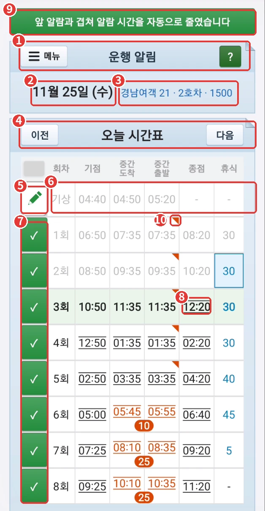
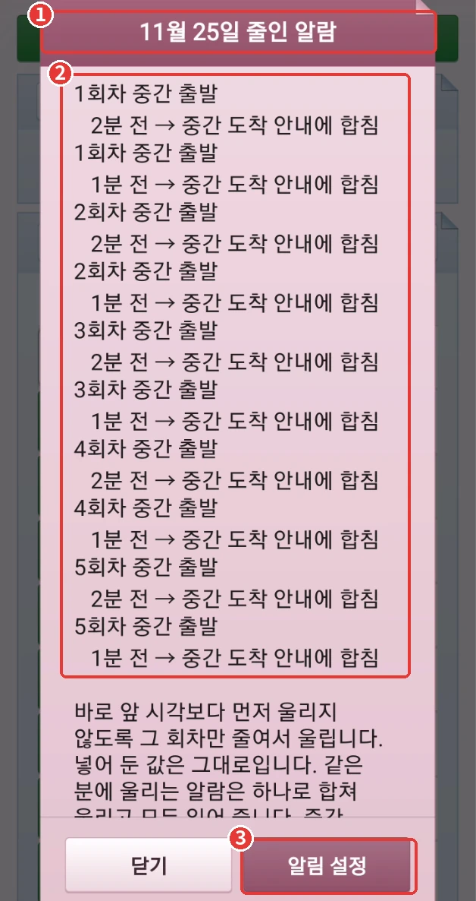
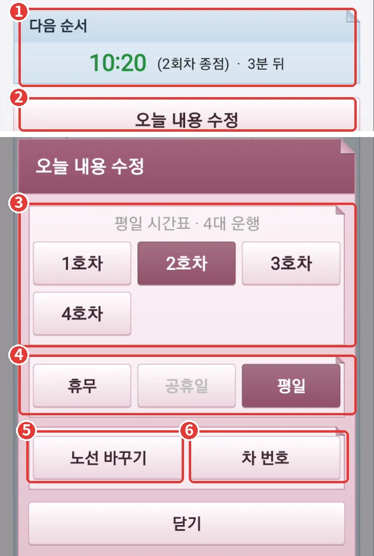
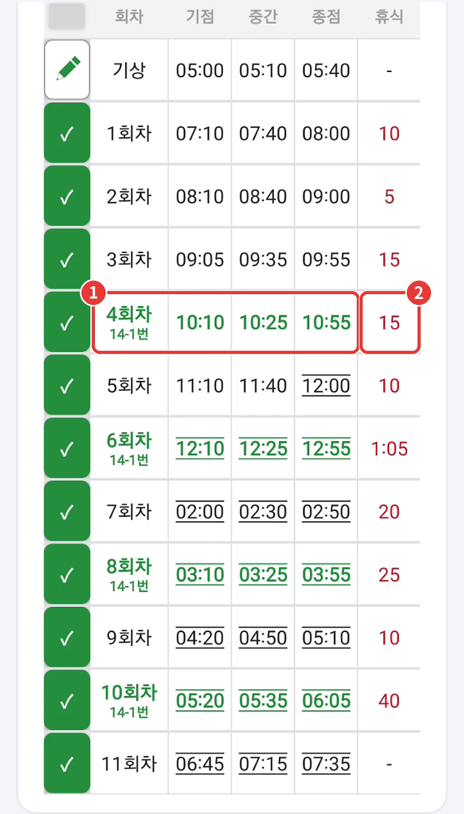
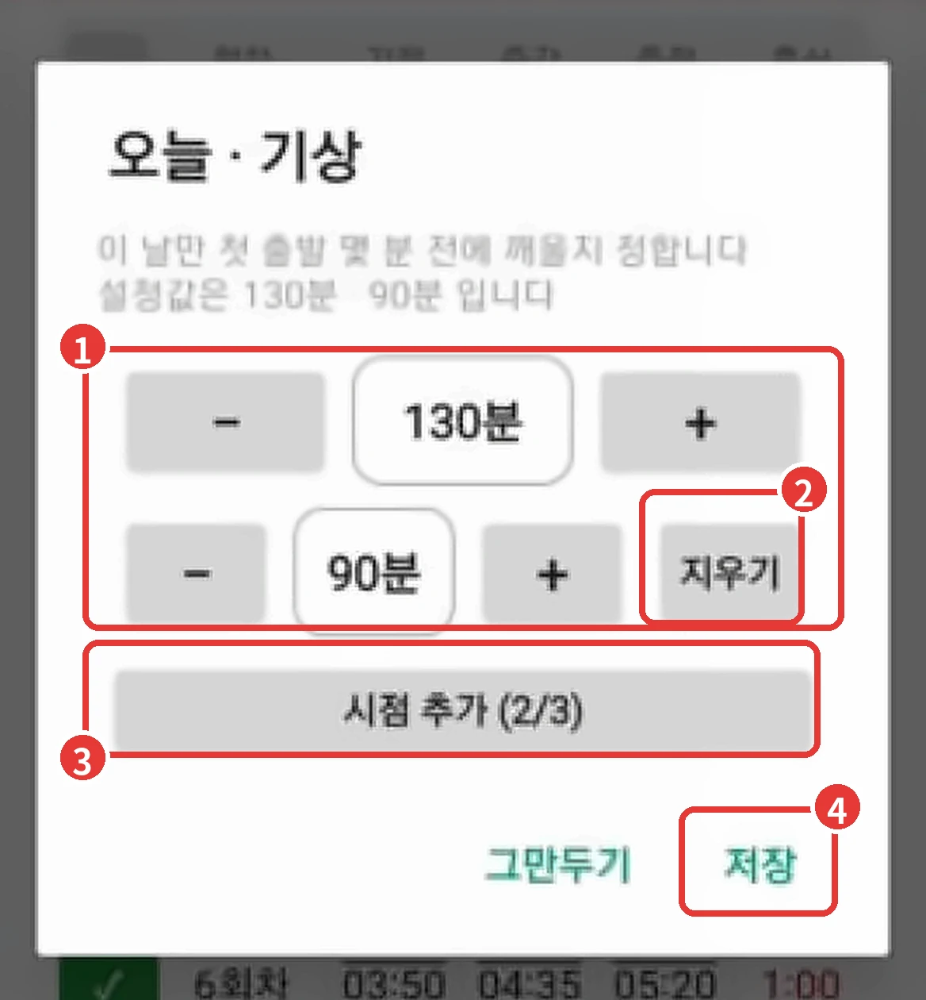
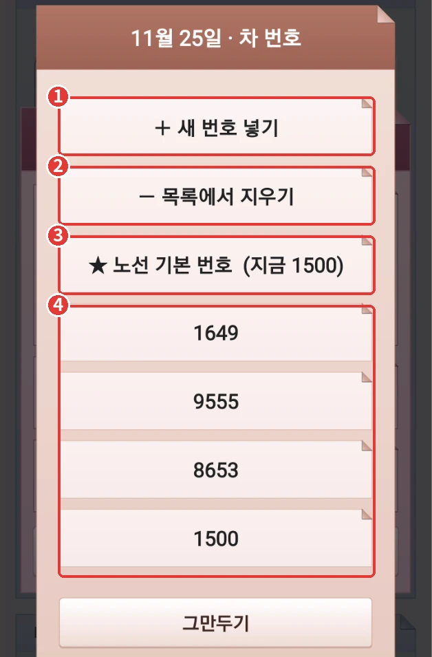
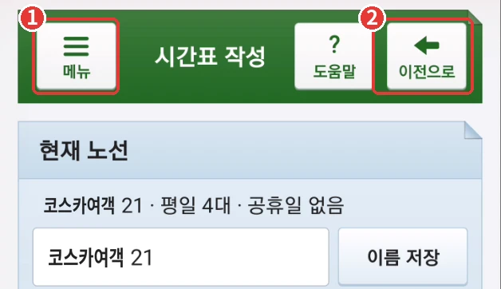

위에서 아래로 쓸어 내리기 : 화면이 맨 위까지 올라가 있을 때 화면 가운데쯤에서 아래로 길게 쓸어 내립니다.
첫 화면에서는 달력이 열리고, 달력을 비롯한 다른 화면에서는 첫 화면으로 갑니다.
맨 위에 '놓으면 ○○' 띠가 보일 때 손을 떼면 됩니다. 덜 끌었거나 도로 올리면 아무 일도 없습니다.
옆으로 밀기 : 첫 화면 시간표를 옆으로 밀면 하루씩 앞날 · 뒷날로 넘어갑니다.
달력을 옆으로 밀면 한 달씩 앞 달 · 다음 달로 넘어갑니다.

① 메뉴 · 물음표(도움말) 단추입니다.
② 보고 있는 날짜입니다. 누르면 오늘로 돌아옵니다.
③ 그날 노선 이름 · 호차 · 차 번호입니다.
④ 이전 · 다음 : 어제, 내일처럼 다른 날을 봅니다.
⑤ 연필 단추 : 그날만 기상 시각을 바꿉니다.
⑥ 기상 줄 : 기상 알림이 울리는 시각입니다. 둘 이상 정해 두면 이른 것부터 차례로 보입니다.
⑦ 회차 체크 : 초록 체크가 있는 회차만 출발 · 중간 알림이 울립니다. 누를 때마다 켜고 끕니다. 오늘이 아닌 날은 한 번 더 묻습니다.
⑧ 숫자 위아래에 줄이 그어진 시각은 오후 시각입니다.
⑨ 초록 줄 : 회차 사이가 짧아 앞 알람과 겹쳐 알람 시간을 저절로 줄인 날에 뜹니다. 누르면 줄인 알람 목록이 열립니다.
⑩ 주황 세모 : 알람 시간을 줄인 칸의 오른쪽 위에 붙습니다.

① 그날 줄인 알람의 목록입니다.
② 회차와 알림마다 몇 분 전을 몇 분 전으로 줄였는지 보입니다. 중간 도착 안내에 합친 중간 출발 알람은 '중간 도착 안내에 합침'으로 보입니다.
③ 알림 설정 : 알림 설정 화면으로 바로 갑니다. 닫기는 그냥 닫습니다.

① 다음 순서 : 다음에 울릴 알림 시각과 남은 시간입니다. 시간표 아래에 있어 밀어 올리면 보입니다.
② 오늘 내용 수정 : 누르면 아래 창이 열립니다.
③ 호차 단추 : 그날 맡은 호차를 누르면 그 호차 시간표로 알림이 걸립니다.
④ 휴무 · 공휴일 · 평일 : 그날을 쉬는 날로 하거나, 공휴일 · 평일 시간표로 바꿉니다.
⑤ 노선 바꾸기 : 그날 하루만 다른 노선으로 바꿉니다.
⑥ 차 번호 : 그날 탄 차 번호를 넣습니다.

① 다른 노선으로 다니는 회차입니다. 회차 칸 아래에 그 노선 이름(이 그림은 14-1번)이 붙고, 그 줄 글씨가 초록 굵은 글씨로 바뀝니다.
② 휴식 칸은 다른 줄과 같습니다.
지난 회차는 다른 칸처럼 흐린 회색이 됩니다. 다른 노선표 보기와 잠금 화면 시간표도 같습니다.

① 그날만 첫 출발 몇 분 전에 깨울지 − · + 로 정합니다.
② 지우기 : 둘째부터 다섯째 알람을 뺍니다.
③ 알람 추가 : 다섯 개까지 둘 수 있습니다.
④ 저장을 눌러야 바뀝니다. 그만두기는 바꾸지 않고 닫습니다.
바꾼 날은 연필 단추 바탕이 파랗게 됩니다. 다시 열어 '설정값으로'를 누르면 되돌아갑니다.

① 새 번호 넣기 : 처음 타는 차 번호를 적어 목록에 담습니다.
② 목록에서 지우기 : 담아 둔 번호를 뺍니다.
③ 노선 기본 번호 : 이 노선에서 늘 타는 차 번호로 정합니다. 번호를 따로 넣지 않은 날에 이 번호가 보입니다.
④ 담아 둔 번호를 누르면 그날 차 번호로 바로 들어갑니다.

① 메뉴 : 사이드 메뉴를 엽니다. 사이드 메뉴 맨 위 '홈으로'로 첫 화면에 갑니다.
② 이전으로 : 바로 앞 화면으로 돌아갑니다. 휴대폰의 뒤로 가기와 같습니다.